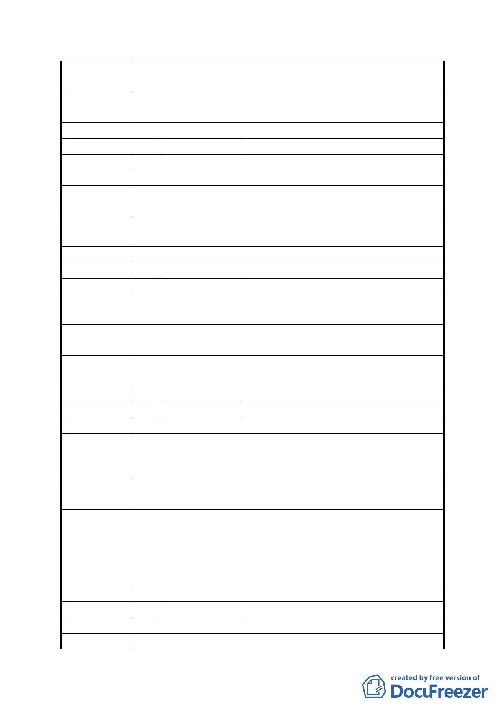

第五次專案小組
審查結論
同編號 1
市府修正後
回應說明
同編號 7、18
委員會決議 同意依「市府修正後回應說明」辦理
編 號 27 陳情人
蕭進堅
陳 情 理 由 希望遷走軍營。
建 議 辦 法 可蓋活動中心或公園，以利里民活動。
第五次專案小組
審查結論
同編號 1
市府修正後
回應說明
同編號 7、18
委員會決議 同意依「市府修正後回應說明」辦理
編 號 28 陳情人
莊宓樺
陳 情 理 由 反對11000立方米的儲留池。
建議
辦
法
應該全面規劃儲留池，不是興隆國小反對就不蓋，而把該區
的容量加到我們這邊
第五次專案小組
審查結論
同編號 1
市府修正後
回應說明
同編號 7、16
委員會決議 同意依「市府修正後回應說明」辦理
編 號 29 陳情人
賴東亮
陳 情 理 由 不要軍營及不要11000立方米的儲留池。
1.軍營遷走。
建 議 辦 法 2.設置藝文特區。
3.只要2000立方米的貯留池。
第五次專案小組
審查結論
同編號 1
1.同編號 7、18 之說明。
市府修正後
回應說明
2.另本防洪調節池因雨水下水道高程因素，分為地面池及地
下池，地面池(2,000m3)以調節萬美街雨水下水道洪峰流
量，地下池(11,500m3)以調節辛亥雨水下水道洪峰流量，
故以地下池之調洪效益較大。
委員會決議 同意依「市府修正後回應說明」辦理
編 號 30 陳情人
蘇茂貴
陳 情 理 由 近幾年本區未曾淹水。
建 議 辦 法 不建議建貯留池。軍營變高級住宅。
- 33 -